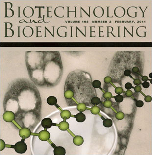
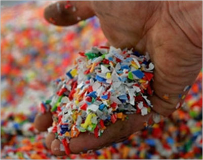
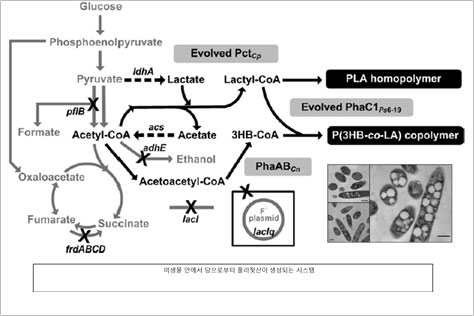
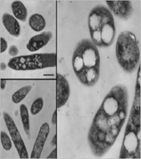
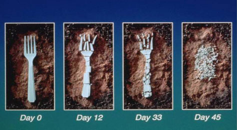

Top 10
Top 10
KAIST RESEARCH ACHIEVEMENTS
Production of Polylactic Acid Using Escherichia Coli
Professor (Department of Chemical and Biomolecular Engineering) Sang Yup LEE
Summary
Environmentally Friendly Manufacturing Process of a Degradable Plastic While convenient as disposable products, plastics are not biodegradable, and hence often cause environmental problems. However, with the development of an environment-friendly plastic that can easily be degraded by bacteria, the use of plastics and the environment-friendly plastics market are on the rise. Professor Lee and his team of researchers were the first to succeed in producing polylactic acid (PLA), which does not occur naturally, in bacteria. Polylactic plastics can be biodegraded into water and carbon dioxide by microorganisms found in soil, and hence are winning attention as a future environment-friendly raw material.
R&D Report
One of the most important uses of petroleum is plastics. The word 'plastic' derives its meaning from its characteristic of being able to be molded. In this context, plastics are easily shaped, sturdy, mass produced inexpensively, and were a revolution in the field of material sciences. However, with the depletion of fossil fuels and repeated reports on the harmful effects they have on the environment, methods of producing materials similar to plastics from organic matter such as corn have attracted attention. Recently, academia has been interested in biorefineries (extracting chemical fuels from microorganisms), and researchers have been searching for methods of obtaining raw materials from organisms. Many accomplishments were made in several fields, and related products in the market are not uncommon. Professor Sang Yup Lee's research team has been devoted to research on the production of succinic acid, base materials of nylon, and various other chemicals through metabolic engineering. The team previously succeeded in engineering microorganisms to efficiently synthesize polyhydroxyalkanoates, a substance that can replace existing polyesters. Meanwhile, polylactic acid, an organic plastic, has been attracting a lot of attention due to its compostability in natural environments and low toxicity to humans. Some scientists have even projected that developing a biopolymer plastic, such as polylactic acid, that can be mass produced lead to the complete replacement of current plastics. However, producing polylactic acid involves complex microbiological as well as chemical processes, which require many modifications and adjustments to be made to the manufacturing (degree). Polylactic acid proved especially difficult to mass produce, as it is not a naturally occurring product, and hence relies entirely on synthetic manufacturing. Professor Lee's team, through collaboration with LG Chemicals, focused on using microorganisms to synthesize macromolecular compounds that do not naturally occur, and the first successful outcome of the collaboration has been the production of polylactic acid.
 Fig 1. Professor Sang Yup Lee's research on the cover of Biotechnology and Bioengineering , February, 2011.
 Fig 2. Biopolymer originating from microorganisms under limelight as next generation environment-friendly plastic.
Professor Lee's Team Succeeds in the Manufacture of an "Oil-, Coal-Free Bioplastic"
Professor Lee's team has discovered a way to efficiently produce polylactic acid (PLA) using bacteria. Instead of the existing complex two-step production process, Professor Lee' s team has produced polylactic acid from materials such as lignocellulose, an abundant renewable resource, through direct fermentation by bacteria. In other words, providing the right food to a bacteria culture leads to the production of bioplastics. Professor Lee further discovered more ways of producing various other types of plastics by combining different monomers with lactic acid. Professor Lee's method has great potential and will enable us to inexpensively mass produce currently existing biomass-derived polymers. Patents have been applied for based on the results of the research and the findings were published as the cover article of Biotechnology and Bioengineering , and also attracted a great deal of attention from various international economics forums and media such as CNN, the Economist, US News & World Report .
 Fig 3. E. Coli producing polylactic acid. Glucose is needed for energy, and polylactic acid is produced as a byproduct of the metabolic reaction.

Fig 4. Professor Lee's metabolically engineered E.Coli
producing polylactic acid.
Implications and Future Prospects
 Fig 5. Bioplastics are biodegraded relatively quickly, and hence are widely used to manufacture disposable products.
Bioplastics can be manufactured without oil or coal, and hence will lead to a reduction of carbon dioxide emissions and reduce costs for raw materials. Most of all, bioplastics are attractive in the context of environmental issues such as pollution and climate change, as they are environment-friendly. With the ongoing depletion of fossil fuels, the demand for polylactic acid and other bioplastics is expected to rise globally. This research has taken the first steps towards a bioplastics market that is projected to expand enormously. Applying methods of polylactic acid mass production will enable us to produce various plastics that are less harmful to the environment.
Research Funding
ㆍKorea Ministry of Education, Science and Technology, Biomedical Technology Development Project-System Informatics Project
ㆍLG Chem Research Park.
Patent
ㆍ| Park, S.J., Jung, Y.K., Cho, J., Lee, S.Y.,"Cells or Plants Having an Producing Ability of Polylactate or Its Copolymers and Method for Preparing Polylactate or Its Copolymers Using the Same", Patent no. WO 2006/126796 Park, S.J., Yang, T.H., Kim, T.W., Lee, S.Y. et al., "Copolymer containing 3-hydroxyalkanoate unit and lactate unit, and its manufacturing method", Patent no. WO 2008/062996
Publication
ㆍ| Jung, Y.K., Kim, T.Y., Park, S.J., and Lee, S.Y., "Metabolic engineering of Escherichia coli for the production of polylactic acid and its copolymers", Biotechnol. Bioeng., 105(1): 161- 171 (2010.1) Jung, Y.K. and Lee, S.Y. "Efficient production of polylactic acid and its copolymers by metabolically engineered Escherichia coli", J. Biotechnol. 151(1): 94-101 (2011.1) Yang, T.H., Jung, Y.K., Kang, H.O., Kim, T.W., Park, S.J., and Lee, S.Y. "Tailormade type II Pseudomonas PHA synthases and their use for the biosynthesis of polylactic acid and its copolymer in recombinant Escherichia coli", Appl. Microbiol. Biotechnol. 90(2): 603-614 (2011.4)